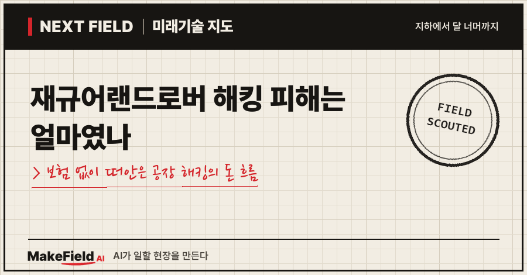
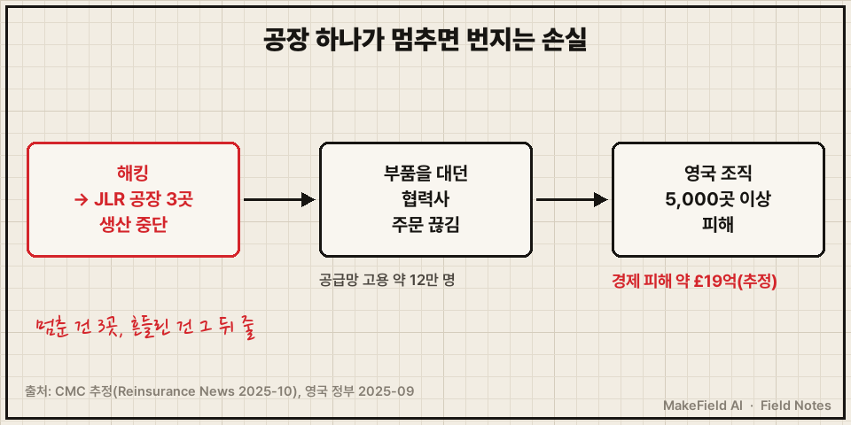
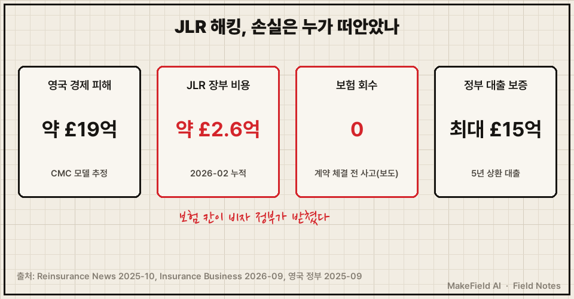
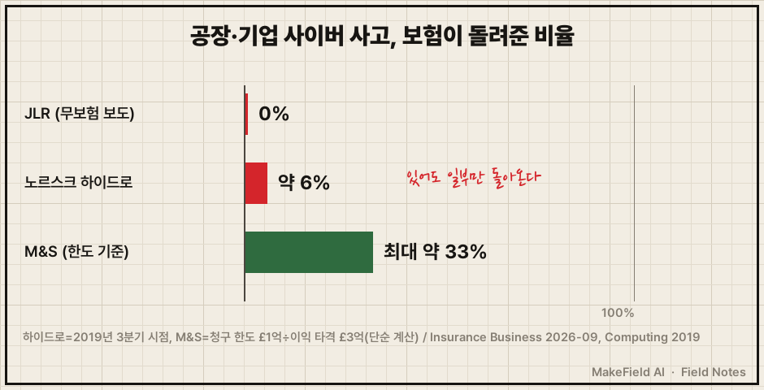

자동차 공장 세 곳이 해킹 한 번에 약 6주 동안 멈추면, 그 청구서는 누구에게 갈까요? 2025년 9월 영국 재규어랜드로버(JLR)에서 실제로 벌어진 일입니다. 그리고 이 사건에서 가장 눈에 띄는 숫자는 피해액이 아니라 보험에서 돌아온 돈 '0'이었어요.
한 줄 요약: 재규어랜드로버 해킹은 영국 기관 추정 약 £19억(약 3조 5,000억 원)의 경제 피해를 내고 5,000곳 넘는 조직에 번진 영국 역대 최대 피해 사이버 사건이며(Reinsurance News 2025-10), JLR이 2026년 2월까지 장부에 올린 관련 비용 약 £2억 6,000만(약 4,800억 원) 중 보험으로 돌아온 돈은 없었다(Insurance Business 2026-09).
이 글은 2026년 11월 기준 공개 자료로 무슨 일이 있었는지, 왜 공장 하나가 멈추면 수천 곳이 흔들리는지, 돈은 누가 떠안았는지, 보험이 있었다면 달랐을지를 차례로 정리합니다. 원화 금액은 1파운드=1,850원으로 단순 환산한 값이에요.
1. 재규어랜드로버 해킹, 무슨 일이 있었나요
2025년 8월 말~9월 초 사이버 공격으로 JLR의 영국 공장 생산이 멈췄고, 약 6주 뒤인 10월 초부터 단계적으로 다시 돌기 시작했다. 주요 흐름을 날짜순으로 정리하면 이래요.
| 시점 | 일어난 일 | 출처 |
|---|---|---|
| 2025-08 말~09-01 | 사이버 공격, 솔리헐·헤일우드·울버햄튼 공장 생산 중단 | Reinsurance News 2025-10, Autocar India 2025-10 |
| 2025-09-28 | 영국 정부, 최대 £15억 대출 보증 발표 | 영국 정부 2025-09 |
| 2025-10 초 | 울버햄튼 엔진 공장·배터리 조립 센터부터 단계적 재가동, 솔리헐 주요 공정은 10월 8일 재개 | Autocar India 2025-10 |
| 2025-10 | 영국 사이버 모니터링 센터(CMC), 경제 피해 약 £19억 추정 | Reinsurance News 2025-10 |
| 2025-11 | 7~9월 분기 실적에 사이버 관련 비용 £1억 9,600만 반영 | Automotive Logistics 2025-11 |
| 2026-02 | 누적 관련 비용 약 £2억 6,000만 | Insurance Business 2026-09 |
💡 CMC(사이버 모니터링 센터) — 큰 사이버 사고의 경제 피해를 추정해 1~5등급으로 매기는 영국 독립 기관. 지진 규모처럼 숫자가 클수록 심각하다.
공격 날짜는 매체마다 '8월 말'과 '9월 1일'로 조금씩 달라요. 다만 생산 중단 기간이 한 달을 넘겨 약 6주였다는 점은 공통입니다(Autocar India 2025-10).
2. 공장 하나가 멈췄는데 왜 5,000곳이 흔들렸나요
피해의 거의 전부가 '물건을 못 만든 손실'이었고, 그 손실이 JLR에서 끝나지 않고 부품을 대던 협력사로 이어졌기 때문이다. CMC는 이 사건을 5단계 중 3등급 '시스템 전반 사건'으로 분류했어요(Reinsurance News 2025-10).
💡 협력사(공급망) — 완성차 회사에 부품을 만들어 대는 회사들. 조립 공장이 멈추면 부품 주문도 함께 끊긴다.
CMC 발표를 전한 기사에 따르면, 피해 추정 범위는 £16억~£21억이고 가장 가능성 높은 값이 £19억이에요. 이 금액의 사실상 전부를 "JLR과 협력사의 제조 생산 손실"이 차지했습니다. 또 공장 설비를 움직이는 제어 시스템까지 크게 영향을 받았거나 정상 생산 복귀가 늦어지면 피해가 더 커질 수 있다는 단서도 붙였어요(Reinsurance News 2025-10).
💡 OT(운영기술) — 공장 기계·로봇·컨베이어를 직접 움직이는 제어 기술. 사무실 PC·이메일 쪽은 IT라고 부른다.

그림을 글로 옮기면, 해킹 → JLR 공장 생산 중단 → 부품을 대던 협력사 주문 중단 → 5,000곳 넘는 영국 조직으로 피해 확산의 순서예요. 영국 정부 발표문은 JLR이 영국에서 직접 고용한 인원을 3만 4,000명, 공급망 고용을 약 12만 명으로 적었습니다(영국 정부 2025-09). 멈춘 것은 공장 세 곳이었지만, 흔들린 것은 그 뒤에 줄지어 선 회사들이었어요.
3. 돈의 흐름 — 손실은 누가 떠안았나요
JLR 자신이 약 £2억 6,000만을 장부에 올렸고, 보험 회수는 없었으며, 협력사 연쇄 피해를 막는 자금은 정부 보증이 받쳤다. 누가 얼마를 짊어졌는지 표로 정리하면 이렇습니다.
| 누가 | 얼마 | 무엇 | 출처 |
|---|---|---|---|
| 영국 경제 전체 | 약 £19억(약 3조 5,000억 원), 범위 £16억~£21억 | CMC 모델 추정 피해 | Reinsurance News 2025-10 |
| JLR 장부 | 2025년 7~9월 £1억 9,600만, 다음 분기 £6,400만, 2026-02 누적 약 £2억 6,000만(약 4,800억 원) | 사이버 관련 비용(특별 항목) | Automotive Logistics 2025-11, Insurance Business 2026-09 |
| 보험사 | 0 | 보험금 회수 없음 | Insurance Business 2026-09 |
| 영국 정부(수출신용기관) | 최대 £15억(약 2조 8,000억 원) 대출 보증 | 시중은행 대출을 보증, 5년 상환 | 영국 정부 2025-09 |
💡 대출 보증 — 정부가 돈을 직접 주는 게 아니라, 회사가 은행에서 빌린 돈을 못 갚으면 정부가 대신 갚겠다고 약속하는 것. 은행은 그 약속을 믿고 돈을 빌려준다.
💡 수출신용기관(UKEF) — 수출 기업의 거래·대출을 보증해 주는 영국 정부 기관. 이번 보증은 이 기관의 '수출 개발 보증(EDG)' 제도로 이뤄졌다.

그림의 네 칸을 글로 풀면, 영국 경제가 입은 피해 추정 £19억, JLR이 직접 쓴 비용 약 £2억 6,000만, 그중 보험이 돌려준 돈 0, 그리고 정부가 보증을 선 대출 최대 £15억이에요. 보증 구조도 알아 둘 만합니다. 돈은 시중은행이 빌려주고, 영국 수출신용기관이 그 대출 위험의 일부를 보증해요. 정부 발표문 주석은 이 제도가 대출 위험의 최대 80%까지 보증하는 게 일반적이라고 설명했습니다(영국 정부 2025-09).
한 가지는 구분해서 봐야 해요. £2억 6,000만은 사고 대응·복구 같은 비용 항목이고, 팔지 못한 차의 매출 감소는 따로입니다. JLR의 7~9월 분기 매출은 £49억으로 1년 전보다 24% 줄었어요(Automotive Logistics 2025-11). 다만 미국 관세 같은 다른 요인도 JLR 실적을 누르고 있다는 지적이 있어(Insurance Business 2026-09), 감소분 전부를 해킹 탓으로 볼 수는 없습니다.
※ 위 기업명과 수치는 산업 구조를 설명하기 위한 예시입니다. 특정 종목의 매수·매도를 권하는 글이 아닙니다.
4. 왜 보험이 한 푼도 안 나왔나요
보도에 따르면 JLR은 사고 당시 보험중개사를 통해 사이버보험 계약을 협상하던 중이었고, 계약이 체결되기 전에 공격을 받았다. 영국 보험 전문지 Insurance Business는 "2025년 9월 JLR은 중개사 록턴(Lockton)을 통해 사이버 보험을 협상하던 중이었고, 계약은 제때 끝나지 않았다"고 썼어요(Insurance Business 2026-09). JLR이 이를 공식 확인한 자료는 이 글에서 찾지 못했으니, 업계지 보도로 읽는 게 맞습니다.
💡 사이버보험 — 해킹·랜섬웨어 사고의 대응·복구 비용, 영업 중단 손실, 배상책임을 보상하는 보험.
💡 보험중개사 — 기업과 보험사 사이에서 보험 설계와 계약을 도와주는 회사.
5. 보험이 있었다면 달랐을까요
보험이 있어도 손실의 일부만 돌아온 사례가 많다. 같은 시기·같은 나라, 그리고 과거 공장 사례를 나란히 놓으면 차이가 보여요.
| 사례 | 총 손실 | 보험으로 돌아온 돈 | 출처 |
|---|---|---|---|
| JLR(2025, 무보험 보도) | 비용 약 £2억 6,000만 | 0 | Insurance Business 2026-09 |
| 영국 유통사 M&S(2025) | 이익 타격 약 £3억 | 청구 가능 한도 최대 £1억 | Insurance Business 2026-09 |
| 노르웨이 알루미늄사 노르스크 하이드로(2019 랜섬웨어) | 2019년 3분기 기준 비용 6,000만~7,100만 달러 | 약 360만 달러(약 6%) | Computing 2019 |

그림을 글로 옮기면, 무보험인 JLR은 0%, 노르스크 하이드로는 2019년 3분기 시점에 약 6%, M&S는 한도를 다 받아도 이익 타격의 약 3분의 1(단순 계산)이에요. 영국 테러 재보험 기구 Pool Re 관계자는 사이버 위험의 보장 공백이 90%까지 갈 수 있다고 말한 것으로 전해졌습니다(Insurance Business 2026-09). 보험이 있느냐 없느냐보다, 보험이 손실의 몇 %를 덮느냐가 더 큰 질문이 된 셈이에요.
💡 재보험 — 보험사가 드는 보험. 큰 사고가 한꺼번에 터질 때 보험사가 위험을 나눠 지려고 든다.
💡 보장 공백 — 실제로 난 손실 중 보험이 덮지 못하고 기업·사회에 남는 부분.
6. 한국 기업에는 어떤 의미인가요, 한계는 무엇인가요
한국 기업 사이버보험도 빠르게 크고 있지만, 그 동력은 공장보다 개인정보 사고다. 대형 손해보험사 6곳의 2026년 1분기 기업 사이버보험 원수보험료는 166억 원으로 1년 전보다 46.5% 늘었어요. 기사는 SK텔레콤 유심 해킹, 쿠팡 개인정보 유출 같은 대형 사고를 계기로 꼽았습니다(아주경제 2026-08).
💡 원수보험료 — 보험사가 고객에게 직접 받은 보험료(재보험으로 넘기기 전 금액).
반대 근거와 한계도 같이 적어 둘게요.
- £19억은 모델 추정치다: CMC가 범위(£16억~£21억)로 낸 추정이고, 실제 집계가 아니에요(Reinsurance News 2025-10).
- 무보험은 보도 기준이다: 계약 협상 중이었다는 내용은 업계지 보도이며, 회사 공식 발표로 확인하지 못했습니다(Insurance Business 2026-09).
- 보험 비율은 시점 값이다: 노르스크 하이드로 6%는 2019년 3분기까지의 수치라 최종 회수액과 다를 수 있어요(Computing 2019).
- 정부 보증은 공짜 돈이 아니다: 5년에 걸쳐 갚는 대출이고, 정부는 그 위험의 일부를 보증하는 구조예요(영국 정부 2025-09).
자주 묻는 질문
Q. 재규어랜드로버 해킹 피해액은 얼마인가요?
영국 사이버 모니터링 센터는 영국 경제 피해를 약 £19억(범위 £16억~£21억)으로 추정했어요(Reinsurance News 2025-10). JLR이 직접 장부에 올린 관련 비용은 2026년 2월까지 약 £2억 6,000만입니다(Insurance Business 2026-09).
Q. 재규어랜드로버 공장은 얼마나 멈췄나요?
2025년 9월 초 멈춘 뒤 약 6주 만인 10월 초부터 엔진 공장 등에서 단계적으로 재가동했어요(Autocar India 2025-10).
Q. 영국 정부는 JLR에 돈을 줬나요?
직접 준 것이 아니라, 시중은행이 빌려주는 최대 £15억 대출을 정부 수출신용기관이 보증했습니다. 5년에 걸쳐 갚는 조건이에요(영국 정부 2025-09).
오늘의 용어 정리
- CMC(사이버 모니터링 센터) — 사이버 사고 경제 피해를 추정·등급화하는 영국 독립 기관
- 협력사(공급망) — 완성차 회사에 부품을 만들어 대는 회사들
- OT(운영기술) — 공장 기계·로봇을 직접 움직이는 제어 기술
- 대출 보증 — 빌린 돈을 못 갚으면 대신 갚겠다는 약속
- 수출신용기관(UKEF) — 수출 기업의 대출·거래를 보증하는 영국 정부 기관
- 사이버보험 — 해킹 사고의 대응·복구 비용, 영업 중단, 배상책임을 보상하는 보험
- 보험중개사 — 기업과 보험사 사이에서 보험 계약을 돕는 회사
- 재보험 — 보험사가 드는 보험
- 보장 공백 — 손실 중 보험이 덮지 못하고 남는 부분
- 원수보험료 — 보험사가 고객에게 직접 받은 보험료
어제 Next Field 글이 '해킹으로 기계가 망가질 때 생기는 약관의 빈칸'이었다면, 오늘은 그 빈칸이 실제 한 회사의 장부에서 어떤 숫자로 찍혔는지를 따라가 봤어요. 다음에는 이런 대형 사고가 한꺼번에 터질 때 보험사 스스로는 어떻게 버티는지, 그 뒷단을 살펴볼 생각입니다. 여러분 회사가 6주 멈춘다면, 그 손실의 몇 %가 어디서 메워질까요?
출처
[1] Reinsurance News(2025-10) — 영국 CMC 추정: JLR 해킹 경제 피해 약 £19억(범위 £16억~£21억), 5,000곳 이상 조직 피해, 5단계 중 3등급 시스템 전반 사건, 손실 대부분이 JLR·협력사 생산 손실, 제어 시스템 영향·복귀 지연 시 더 커질 수 있음
→ https://www.reinsurancene.ws/jaguar-land-rover-attack-most-economically-damaging-cyber-event-to-hit-uk-cmc/
[2] 영국 정부(2025-09) — 2025-09-28 JLR 최대 £15억 대출 보증 발표: 시중은행 대출을 UKEF 수출 개발 보증(EDG)이 보증, 5년 상환, EDG는 통상 대출 위험의 최대 80% 보증, 영국 직접 고용 3만 4,000명·공급망 약 12만 명
→ https://www.gov.uk/government/news/government-backs-jaguar-land-rover-with-15-billion-loan-guarantee
[3] Autocar India(2025-10) — 9월 1일 공격 뒤 약 6주 중단, 울버햄튼 엔진 공장·배터리 조립 센터부터 단계적 재가동, 솔리헐 주요 공정 10월 8일 재개
→ https://www.autocarindia.com/car-news-amp/jlr-restarts-production-after-six-week-cyberattack-shutdown-437637
[4] Automotive Logistics(2025-11) — JLR 2025년 7~9월 분기 사이버 관련 비용 £1억 9,600만(특별 항목), 분기 매출 £49억(전년 대비 24% 감소)
→ https://www.automotivelogistics.media/digitalisation/jlr-revenue-drops-25-amid-196m-cyber-attack-costs/2131433
[5] Insurance Business(2026-09) — 2026년 2월까지 JLR 누적 관련 비용 약 £2억 6,000만, 보험 회수 없음, 록턴 통해 사이버보험 협상 중 사고, M&S 이익 타격 £3억·청구 한도 최대 £1억, Pool Re 관계자 보장 공백 최대 90%
→ https://www.insurancebusinessmag.com/uk/news/cyber/did-jaguar-land-rovers-cyber-insurance-gap-help-pave-the-way-to-4000-job-losses-588902.aspx
[6] Computing(2019) — 노르스크 하이드로 2019년 랜섬웨어, 2019년 3분기 기준 비용 6,000만~7,100만 달러 중 보험 회수 약 360만 달러(약 6%)
→ https://computing.co.uk/news/3083156/norsk-hydro-receives-first-cyber-insurance-payout-of-usd36-million-for-breach-related-losses
[7] 아주경제(2026-08) — 대형 손보사 6곳 2026년 1분기 기업 사이버보험 원수보험료 166억 원(46.5% 증가), SK텔레콤 유심 해킹·쿠팡 개인정보 유출이 계기
→ https://ajunews.com/view/20260803145901234